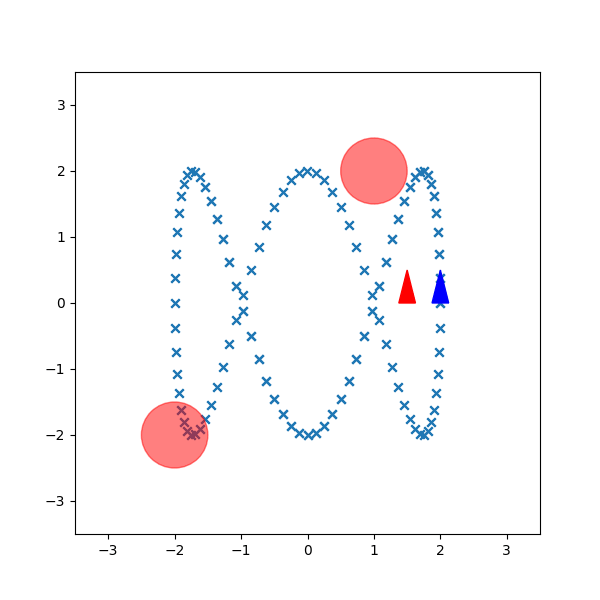
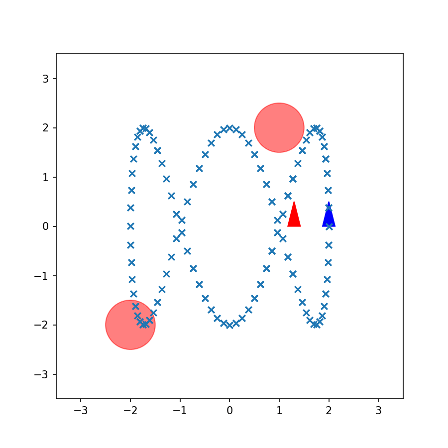
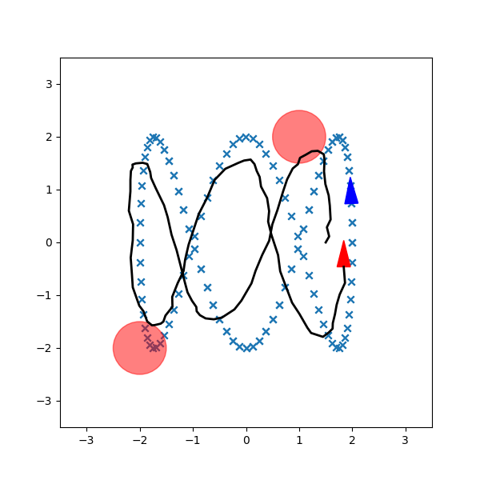

The task is to control a differential-drive unicycle robot to track a Lissajous figure-eight reference trajectory while avoiding two circular obstacles at (−2, −2) and (1, 2) with radius 0.5 m, all within a MuJoCo physics simulation.
Two controllers are designed and compared. The CEC (Constrained Exponential Controller) formulates the problem as a nonlinear MPC and solves it with CasADi at every timestep — achieving smooth, constraint-aware tracking. The GPI (Generalized Policy Improvement) takes a reinforcement-learning approach, discretizing the state-action space and learning a value function offline to derive a fast lookup-based policy at runtime.
Solves a finite-horizon optimal control problem at every timestep using CasADi's NLP solver. The error state [ex, ey, eθ] is computed between the robot pose and the reference trajectory. Horizon T = 7, discount γ = 0.95. Hard inequality constraints enforce obstacle avoidance for both circular obstacles with a combined clearance margin of 0.8 m.
Discretizes the error state space [ex, ey, eθ] and the action space [v, w] into grids. A feature-based value function V(s) is estimated offline via policy iteration. At runtime, a greedy one-step rollout over all actions selects the control with the lowest predicted cost-to-go — enabling fast, model-free trajectory following.
Baseline P-controller vs. CEC controller on the Lissajous trajectory.



Representative values; CEC enforces hard obstacle-avoidance constraints.
| Parameter | Value | Description |
|---|---|---|
T | 7 | MPC prediction horizon (steps) |
γ | 0.95 | Cost discount factor |
v_min / v_max | 0.1 / 1.0 m/s | Linear velocity limits |
ω_min / ω_max | −1.0 / 1.0 rad/s | Angular velocity limits |
| Robot radius | 0.3 m | Collision margin |
| Obstacles | (−2,−2,r=0.5), (1,2,r=0.5) | Circular obstacles in env |